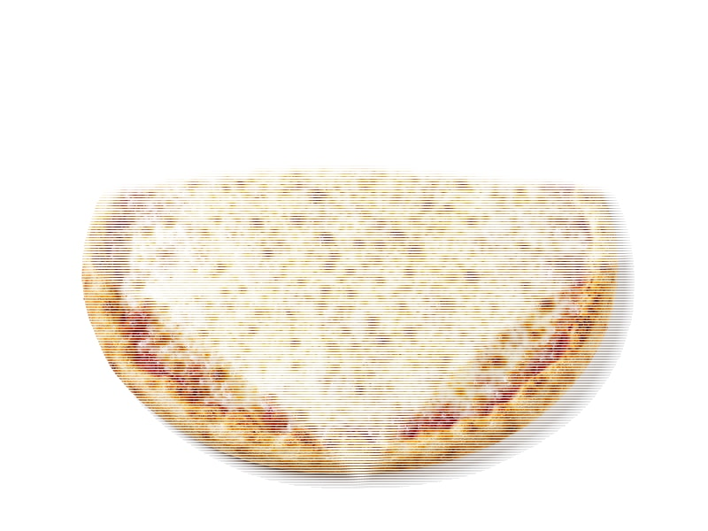

Mrożone pizze
Ristorante Mozzarella
Ristorante Mozzarella: 10 g białka, 240 kcal, 28 g węglowodanów i 10 g tłuszczu na 100 g. Kategoria: Mrożone pizze.
Kalorie240 kcalna 100 g
Białko / proteiny10 g
Węglowodany28 g
Tłuszcz10 g
Cena (szac.)~4,48 złza 100 g
Ceny zaktualizowano: maj 2026 (szacunek — ceny w popularnych supermarketach)
Porcja: cała pizza (335g)
| Kalorie | 804 kcal |
|---|---|
| Białko | 33.5 g |
| Węglowodany | 93.8 g |
| Tłuszcz | 33.5 g |
| Cena (szac.) | ~15,00 zł |
Szczegółowe składniki odżywcze na 100 g
| Wartość energetyczna (kalorie) | 240 kcal |
|---|---|
| Białko (proteiny) | 10 g |
| Węglowodany | 28 g |
| Tłuszcz | 10 g |
| Tłuszcze nasycone | 5 g |
| Tłuszcze nienasycone | 5 g |
| Witaminy i minerały | Wapń, Sód, Potas |
| Współczynnik kcal / 1 g białka | 24.0 |
| Cena produktu (szac. za 100 g) | ~4,48 zł |
| Cena za 100 g białka (szac.) | ~44,78 zł |